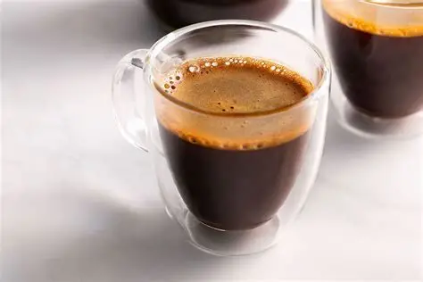

Espresso
L'espresso est apparu en Italie au début du XXe siècle. Sa préparation rapide et sous pression en fait une méthode emblématique. Il est constitué d'une petite quantité d'eau chaude pressurisée passant à travers un café très finement moulu. L'espresso se compose uniquement de café concentré, surmonté d'une fine couche de crema, offrant une boisson intense et riche en arômes.
